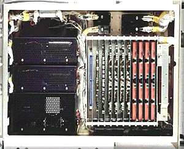

Currently our capabilities are in the following areas:
Computer and Inertial systems (CI)
- Digital Flight Control Computers
- Analog Flight Control Computers
- Inertial Systems
- Accelerometers
- Rate Gyroscopes
- General Avionics Computer
Processors and Pneumatics systems (PP)
- Programmable Signal Processor
- Air Inlet Control Assemblies
- Jettison Remote Interface Unit
- Missile Release Interface Unit
- Central Air Data Computer
|

Avionic Line Replacable Unit (LRU) on Test Stand.
|